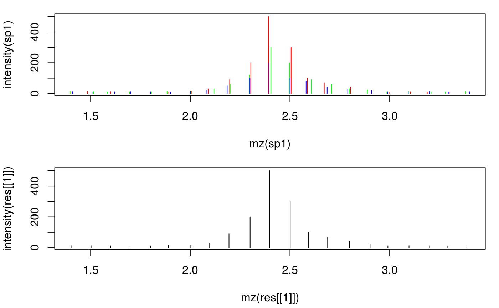
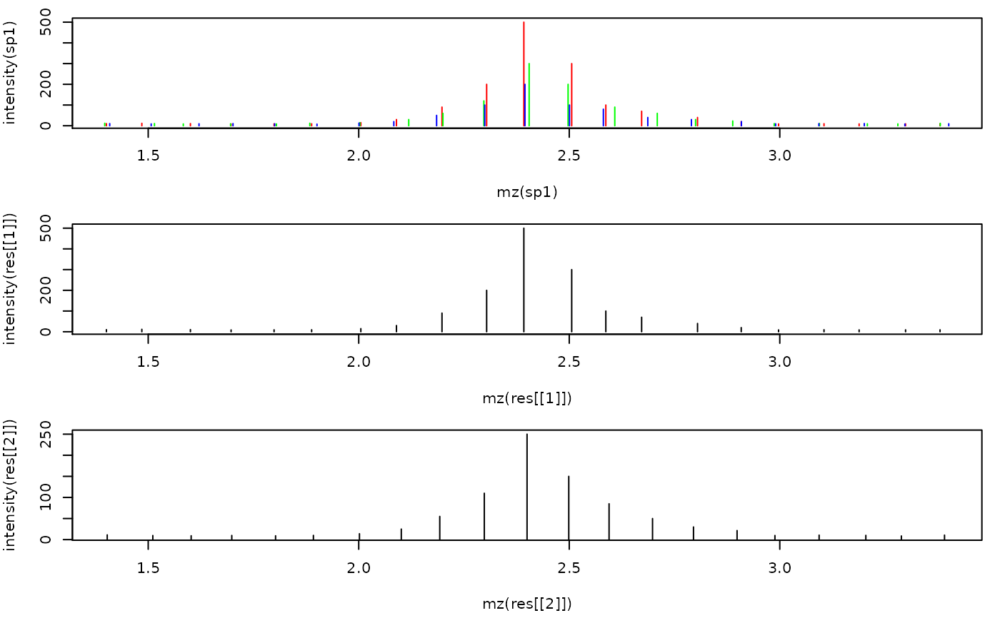

combineSpectra.RdcombineSpectra combines spectra in a MSnExp, OnDiskMSnExp
or Spectra object applying the summarization function fun to sets
of spectra defined by a factor (fcol parameter). The resulting combined
spectrum for each set contains metadata information (present in mcols and
all spectrum information other than mz and intensity) from the first
spectrum in each set.
Combining of spectra for MSnExp or OnDiskMSnExp objects is performed by default for each file separately, combining of spectra across files is thus not possible. See examples for details.
# S4 method for MSnExp combineSpectra(object, fcol = "fileIdx", method = meanMzInts, ..., BPPARAM = bpparam()) # S4 method for Spectra combineSpectra(object, fcol, method = meanMzInts, fun, ...)
| object | |
|---|---|
| fcol | For |
| method |
|
| ... | additional arguments for |
| BPPARAM | For |
| fun | Deprecated use |
A Spectra or MSnExp object with combined spectra. Metadata
(mcols) and all spectrum attributes other than mz and intensity
are taken from the first Spectrum in each set.
meanMzInts() for a function to combine spectra.
set.seed(123) mzs <- seq(1, 20, 0.1) ints1 <- abs(rnorm(length(mzs), 10)) ints1[11:20] <- c(15, 30, 90, 200, 500, 300, 100, 70, 40, 20) # add peak ints2 <- abs(rnorm(length(mzs), 10)) ints2[11:20] <- c(15, 30, 60, 120, 300, 200, 90, 60, 30, 23) ints3 <- abs(rnorm(length(mzs), 10)) ints3[11:20] <- c(13, 20, 50, 100, 200, 100, 80, 40, 30, 20) ## Create the spectra. sp1 <- new("Spectrum1", mz = mzs + rnorm(length(mzs), sd = 0.01), intensity = ints1, rt = 1) sp2 <- new("Spectrum1", mz = mzs + rnorm(length(mzs), sd = 0.01), intensity = ints2, rt = 2) sp3 <- new("Spectrum1", mz = mzs + rnorm(length(mzs), sd = 0.009), intensity = ints3, rt = 3) spctra <- Spectra(sp1, sp2, sp3, elementMetadata = DataFrame(idx = 1:3, group = c("b", "a", "a"))) ## Combine the spectra reporting the maximym signal res <- combineSpectra(spctra, mzd = 0.05, intensityFun = max) res#> Spectra with 1 spectra and 2 metadata column(s): #> msLevel rtime peaksCount | idx group #> <integer> <numeric> <integer> | <integer> <character> #> 1 1 1 191 | 1 b#> 1 #> 1## Plot the individual and the merged spectrum par(mfrow = c(2, 1), mar = c(4.3, 4, 1, 1)) plot(mz(sp1), intensity(sp1), xlim = range(mzs[5:25]), type = "h", col = "red") points(mz(sp2), intensity(sp2), type = "h", col = "green") points(mz(sp3), intensity(sp3), type = "h", col = "blue") plot(mz(res[[1]]), intensity(res[[1]]), type = "h", col = "black", xlim = range(mzs[5:25]))## Combine spectra in two sets. res <- combineSpectra(spctra, fcol = "group", mzd = 0.05) res#> Spectra with 2 spectra and 2 metadata column(s): #> msLevel rtime peaksCount | idx group #> <integer> <numeric> <integer> | <integer> <character> #> 1 1 1 191 | 1 b #> 2 1 2 191 | 2 artime(res)#> 1 2 #> 1 2## Plot the individual and the merged spectra par(mfrow = c(3, 1), mar = c(4.3, 4, 1, 1)) plot(mz(sp1), intensity(sp1), xlim = range(mzs[5:25]), type = "h", col = "red") points(mz(sp2), intensity(sp2), type = "h", col = "green") points(mz(sp3), intensity(sp3), type = "h", col = "blue") plot(mz(res[[1]]), intensity(res[[1]]), xlim = range(mzs[5:25]), type = "h", col = "black") plot(mz(res[[2]]), intensity(res[[2]]), xlim = range(mzs[5:25]), type = "h", col = "black")## Combining spectra of an MSnExp/OnDiskMSnExp objects ## Reading data from 2 mzML files sciex <- readMSData(dir(system.file("sciex", package = "msdata"), full.names = TRUE), mode = "onDisk") ## Filter the file to a retention time range from 2 to 20 seconds (to reduce ## execution time of the example) sciex <- filterRt(sciex, rt = c(2, 20)) table(fromFile(sciex))#> #> 1 2 #> 64 64## We have thus 64 spectra per file. ## In the example below we combine spectra measured in one second to a ## single spectrum. We thus first define the grouping variable and add that ## to the `fData` of the object. For combining, we use the ## `consensusSpectrum` function that combines the spectra keeping only peaks ## that were found in 50% of the spectra; by defining `mzd = 0.01` all peaks ## within an m/z of 0.01 are evaluated for combining. seconds <- round(rtime(sciex)) head(seconds)#> F1.S008 F1.S009 F1.S010 F1.S011 F1.S012 F1.S013 #> 2 3 3 3 3 4fData(sciex)$second <- seconds res <- combineSpectra(sciex, fcol = "second", mzd = 0.01, minProp = 0.1, method = consensusSpectrum) table(fromFile(res))#> #> 1 2 #> 19 19## The data was reduced to 19 spectra for each file.